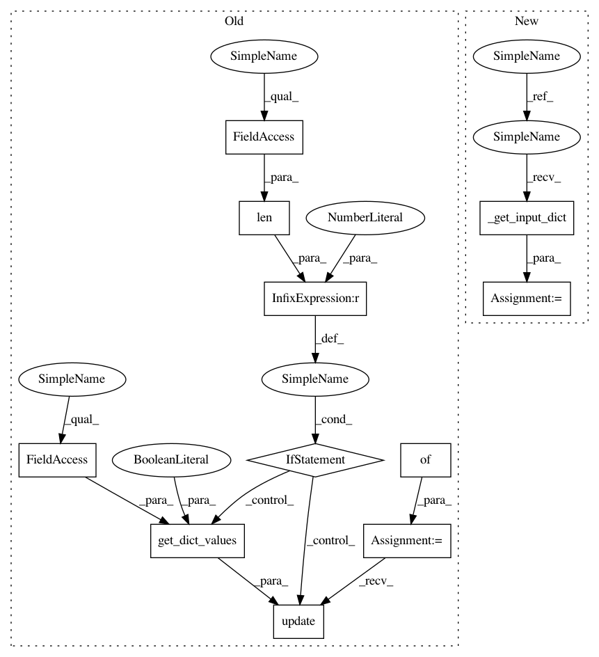

30028c6256de0cef715095e3994e396025c068d4,pixyz/distributions/exponential_distributions.py,RelaxedCategorical,sample,#RelaxedCategorical#,257
Before Change
def sample(self, x_dict={}, batch_n=None, sample_shape=torch.Size(), return_all=True, reparam=False):
// check whether the input is valid or convert it to valid dictionary.
x_dict = self._check_input(x_dict)
input_dict = {}
// conditioned
if len(self.input_var) != 0:
input_dict.update(get_dict_values(x_dict, self.input_var, return_dict=True))
self.set_dist(input_dict, batch_n=batch_n, sampling=True)
output_dict = self.get_sample(reparam=reparam,
sample_shape=sample_shape)
After Change
else:
raise ValueError()
def sample(self, x_dict={}, batch_n=None, sample_shape=torch.Size(), return_all=True, reparam=False):
// check whether the input is valid or convert it to valid dictionary.
input_dict = self._get_input_dict(x_dict)
self.set_dist(input_dict, batch_n=batch_n, sampling=True)
output_dict = self.get_sample(reparam=reparam, sample_shape=sample_shape)
In pattern: SUPERPATTERN
Frequency: 3
Non-data size: 11
Instances
Project Name: masa-su/pixyz
Commit Name: 30028c6256de0cef715095e3994e396025c068d4
Time: 2020-05-04
Author: kaneko@weblab.t.u-tokyo.ac.jp
File Name: pixyz/distributions/exponential_distributions.py
Class Name: RelaxedCategorical
Method Name: sample
Project Name: masa-su/pixyz
Commit Name: 30028c6256de0cef715095e3994e396025c068d4
Time: 2020-05-04
Author: kaneko@weblab.t.u-tokyo.ac.jp
File Name: pixyz/distributions/distributions.py
Class Name: DistributionBase
Method Name: sample
Project Name: masa-su/pixyz
Commit Name: 30028c6256de0cef715095e3994e396025c068d4
Time: 2020-05-04
Author: kaneko@weblab.t.u-tokyo.ac.jp
File Name: pixyz/distributions/exponential_distributions.py
Class Name: RelaxedBernoulli
Method Name: sample